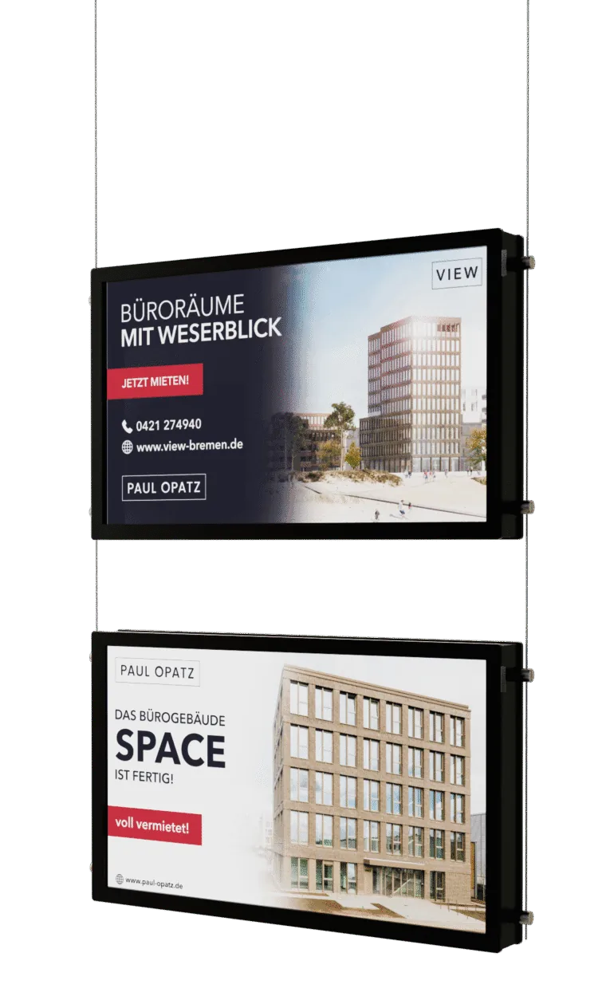

Papier im Schaufenster kostet Sie jede Woche Anfragen.
Digitale Immobilien-Displays, die Ihre Objekte automatisch aus onOffice, Propstack und weiteren Maklersystemen anzeigen. Hell, immer aktuell, Tag und Nacht sichtbar.
Wir zeigen Ihnen ESYSYNC an Ihren eigenen Objekten. Unverbindlich, in 15 Minuten.
Im Einsatz bei Volksbanken, Sparkassen, REMAX, KENSINGTON und führenden Maklerbüros. Hergestellt in Bremen.
Ihr Schaufenster ist Ihre teuerste Werbefläche. Und sie arbeitet gegen Sie.
Sie zahlen 1a-Miete für Ihre Lage. Und präsentieren Ihre Objekte auf ausgedruckten Zetteln, die vergilben, sich wellen und nach Feierabend im Dunkeln verschwinden.
Jeder Passant, der an einem ausgeblichenen Zettel vorbeiläuft, ist eine verpasste Anfrage.
Vergilbte Papiere, Klebestreifen, schiefe Aushänge. Kein guter erster Eindruck.
Jedes Objekt pflegen Sie zweimal. Einmal im System, einmal am Fenster.
Verkaufte Objekte hängen wochenlang weiter. Peinlich und unaktuell.
Bei Sonne schlecht lesbar, bei Dunkelheit unsichtbar. Halbe Werbezeit verschenkt.
So sieht Ihr Schaufenster ab morgen aus.
ESYSYNC macht aus Ihrem Schaufenster einen digitalen Immobilienaushang. Ihre Objekte fließen automatisch aus Ihrem Maklersystem auf die Displays. Neue Objekte erscheinen von selbst, verkaufte verschwinden automatisch. Sie drucken nie wieder etwas aus.

Regler ziehen. Dasselbe Schaufenster, links heute, rechts mit ESYSYNC.
Immer aktuell.
Objekte, Preise und Status kommen automatisch aus Ihrem System, aus onOffice, Propstack oder per OpenImmo.
Immer sichtbar.
Bis zu 1400 Nits. Lesbar bei direkter Sonne, weithin sichtbar nach Feierabend.
Ganz ohne Aufwand.
Kein Drucken, kein Laminieren, kein Austauschen im Fenster.
In 3 Schritten aus Ihrem System ins Schaufenster.
Display aufstellen.
Hochwertige Displays an Drahtseilen, sauber installiert. In rund 90 Minuten pro Standort startklar. Wir liefern und montieren.
System verbinden.
Ihre Objekte fließen automatisch über die OpenImmo-Schnittstelle aus onOffice, Propstack und weiteren Maklersystemen. Kein manuelles Übertragen. Alternativ per Drag-and-Drop in der Web-App.
Läuft von allein.
Wechsel, Aktualisierung, verkaufte Objekte raus. Alles automatisch, zentral steuerbar. Sie kümmern sich um nichts.
Ihr Schaufenster arbeitet auch dann, wenn niemand im Büro ist.
Rund um die Uhr sichtbar.
Ihr Schaufenster präsentiert Ihre Objekte abends, am Wochenende und bei Dunkelheit weiter.
Weniger Aufwand.
Zentrale Steuerung, automatische Aktualisierung, keine Ausdrucke mehr.
Moderne Außenwirkung.
Ein digitales Schaufenster zeigt sofort: hier arbeitet ein professioneller, digitaler Betrieb.
Rechnen Sie es einfach durch. Eine einzige zusätzliche Anfrage pro Monat, die zum Auftrag wird, deckt Ihre Displays um ein Vielfaches. Alles darüber ist Gewinn.


Kein Monitor mit USB-Stick. Ein System vom Hersteller.
ESYSYNC kommt von AVANTO aus Bremen. Wir entwickeln und produzieren die Hardware selbst, seit über zehn Jahren im Bereich digitale Immobilienpräsentation. Wir sind Hersteller und Servicepartner, kein Wiederverkäufer. Hardware, Software, Automatisierung und Service kommen aus einer Hand.
Wir kümmern uns.
Zentrale Steuerung, Fernwartung, klarer Serviceweg. Bei Bedarf tauschen wir Komponenten.
Langlebige Premium-Hardware.
Schaufenstertauglich gebaut, nicht der Baumarkt-Fernseher hinter Glas. 24 Monate Herstellergarantie.
Transparente Konditionen.
Klarer Monatspreis, faire Kündigung mit drei Monaten zum Monatsende. Kein Lock-in, kein Kleingedrucktes.
Made in Germany, Hosting in Deutschland.
SaaS auf AWS mit Serverstandort Deutschland.

Für Filialnetze gebaut. Von IT und Compliance abgenommen.
ESYSYNC modernisiert die Filialwirkung und verbindet den Standort mit Ihrer digitalen Immobilienvermarktung. Mehrere Filialen steuern Sie zentral aus einem Konto.
- DORA unkritisch eingeordnet. ESYSYNC ist eine Marketing- und Schaufensterlösung, kein Kernbankensystem. Ein Ausfall berührt weder Zahlungsverkehr noch Kontoführung.
- Keine personenbezogenen Endkundendaten. Im Schaufenster laufen öffentlich vermarktete Immobilien- und Maklerdaten.
- Serverstandort Deutschland, Zugriffsbeschränkung, Kiosk- und Lockdown-Betrieb, dokumentiertes Updatekonzept.
- Saubere Vertragsbasis: Leistungsbeschreibung, SLA, Sicherheitsmaßnahmen, Subdienstleister und Löschkonzept dokumentiert.
Banken, Sparkassen und führende Makler zeigen schon digital.
„Unsere Kunden bleiben stehen. Eine bessere Werbung gibt es nicht.“

„Unsere Inhalte werden durch die Displays viel besser wahrgenommen. Die Rückmeldungen sind durchweg positiv.“

„Wir sind begeistert vom modernen Erscheinungsbild und der einfachen Bedienung.“

„Perfektes Handling, freundlicher Support. So muss digitale Zusammenarbeit laufen.“

Was kostet ESYSYNC?
Transparent statt Blackbox. Die ESYSYNC-Software startet bei 39 € pro Monat und Standort (netto). Die passenden Displays und die einmalige Einrichtung stimmen wir auf Ihre Anzahl an Schaufenstern ab. Faire Laufzeit, keine versteckten Lizenzkosten.
Was Makler und Filialleiter uns vorher fragen.
Was kostet ein digitales Schaufenster für Makler?
Die ESYSYNC-Software startet bei 39 € pro Monat und Standort (netto). Dazu kommen die Displays je nach Anzahl der Schaufenster und eine einmalige Einrichtung. Das genaue Angebot für Ihre Standorte besprechen wir in der Demo.
Funktioniert das mit onOffice oder Propstack?
Ja. ESYSYNC bezieht Ihre Objektdaten automatisch über die OpenImmo-Schnittstelle aus onOffice, Propstack und weiteren Maklersystemen. Neue Objekte, Preisänderungen und Statuswechsel erscheinen automatisch. Kein doppeltes Pflegen.
Wir haben schon Monitore. Können wir die weiter nutzen?
Oft ja. Vorhandene Bildschirme lassen sich über die ESYSYNC Playerbox einbinden. Den Mehrwert bringt die zentrale Steuerung: automatische Vorlagen, Wechsel und Service.
Sind die Displays bei Sonnenlicht lesbar?
Ja. ESYSYNC-Displays erreichen bis zu 1400 Nits, also klar lesbar bei direkter Sonneneinstrahlung und weithin sichtbar nach Einbruch der Dunkelheit.
Ist das DORA- und datenschutzkonform für Banken?
ESYSYNC ist eine Marketing- und Schaufensterlösung, kein Kernbankensystem, und gilt als unkritische IKT-Dienstleistung. Im Schaufenster laufen öffentlich vermarktete Immobiliendaten, keine personenbezogenen Endkundendaten. Serverstandort Deutschland.
Wie lange bin ich gebunden?
Faire Konditionen statt Lock-in. Kündigung mit drei Monaten zum Monatsende. Keine versteckten Lizenzkosten.
Was passiert mit verkauften Objekten?
Sie verschwinden automatisch aus dem Display, sobald sie im System den Status wechseln. Kein veraltetes Objekt hängt mehr im Fenster.
Wie schnell ist ein Display einsatzbereit?
Die Installation dauert im Schnitt rund 90 Minuten pro Standort. Große Rollouts planen wir standortweise, zum Beispiel 18 Standorte in rund sechs Tagen.
Kann ich mehrere Filialen zentral verwalten?
Ja. Alle Standorte laufen über ein Konto. Passend für Franchise-Gruppen und Filialnetze von Banken und Sparkassen.
Machen Sie aus Ihrem Schaufenster Ihren besten Verkäufer.
Sehen Sie in einer kurzen Demo, wie ESYSYNC an Ihren eigenen Objekten aussieht. Unverbindlich und in 15 Minuten.